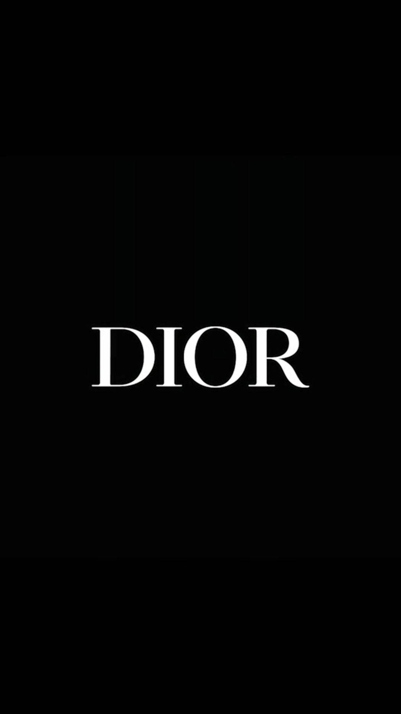

1905 - Born on January 21
In Granville, a seaside town in the north of France.
1925-1928 - College
Although Dior was passionate about art and expressed an interest in becoming an architect, he enrolled at the École des Sciences Politiques in 1925 to begin political science studies.
1928 - Art Gallery
He graduated in 1928 and opened a small art gallery with money from his father (the family name was not allowed above the door).
1931 - Art Gallery Closed
The gallery closed during a difficult year that included family deaths and financial collapse.
1935 - Illustrating job at Figaro Illustré
Dior began selling fashion sketches and in 1935 landed a job illustrating for the magazine Figaro Illustré.
1938 - Hired as a design assistant by Robert Piguet
Dior was hired as a design assistant by Paris couturier Robert Piguet.


1938-1945 - Fought in WWII
Dior served in the south of France as an officer in the French army.
1946 - Opened Dior Fashion House
Backed financially by Marcel Boussac, Dior created his own label — Maison Dior.
1947 - Introduced the New Look
The New Look revolutionized post-war fashion and reintroduced femininity to couture.
1950s - Dior is booming
The New Look led to international success and helped re-establish Paris as a fashion capital.
1957 - Appeared on the cover of Time magazine
His devoted following included socialites, celebrities, and royalty.
1957 - Appoints his successor
Dior named Yves Saint Laurent as his successor in 1957.
1957 - Died from a heart attack in Italy
Dior died on October 23, 1957, while vacationing in Italy.